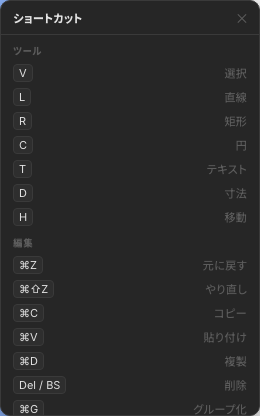

キーボードショートカット
キャンバス右下の ? ボタンからも同じ一覧を表示できます。 macOS では Ctrl の代わりに Cmd キーを使います。

ツール切替
| キー | ツール |
|---|---|
| V | 選択 |
| H | パン（移動） |
| R | 矩形 |
| C | 円 |
| L | 線 |
| T | テキスト |
| D | 寸法線 |
ペン（ベジェ）ツールはパレットから選択します。入力中（テキストフィールドにフォーカスがあるとき）はツール切替は無効です。
編集
| キー | 操作 |
|---|---|
| Ctrl+Z | 元に戻す (Undo) |
| Ctrl+Y / Ctrl+Shift+Z | やり直し (Redo) |
| Ctrl+C | コピー |
| Ctrl+V | 貼り付け |
| Ctrl+D | 複製 |
| Ctrl+A | すべて選択 |
| Delete / Backspace | 削除 |
| Ctrl+G | グループ化 |
| Ctrl+Shift+G | グループ解除 |
| Alt+Shift+U | パス結合 (Union) |
| Alt+Shift+S | パス減算 (Subtract) |
| Alt+Shift+I | パス交差 (Intersect) |
| Alt+Shift+E | パス除外 (Exclude) |
| Alt+Shift+F | パス統合 (Flatten) |
| 矢印キー | 選択図形を 1 mm 移動 |
| Shift + 矢印 | 10 mm 移動 |
表示・ナビゲーション
| キー / 操作 | 内容 |
|---|---|
| Ctrl+S | 保存（自動保存の即時実行） |
| Space + ドラッグ | キャンバスをパン |
| マウスホイール | ズーム |
| Esc | 選択解除 / 作図キャンセル |
| ベジェ作図中 Enter | パスを確定 |
| ベジェ作図中 Backspace | 直前の点を削除 |
ファイル（ツールバー）
| キー | 操作 |
|---|---|
| Ctrl+N | 新規プロジェクト |
| Ctrl+O | プロジェクトを開く |
| Ctrl+S | 保存 |